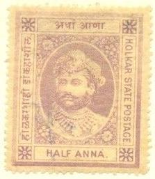
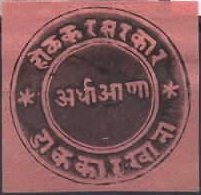
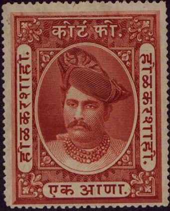

Note: on my website many of the
pictures can not be seen! They are of course present in the
catalogue;
contact me if you want to purchase it.

1/2 a lilac
Value of the stamps |
|||
vc = very common c = common * = not so common ** = uncommon |
*** = very uncommon R = rare RR = very rare RRR = extremely rare |
||
| Value | Unused | Used | Remarks |
| 1/2 a | ** | ** | |

1/2 a black on red
Value of the stamps |
|||
vc = very common c = common * = not so common ** = uncommon |
*** = very uncommon R = rare RR = very rare RRR = extremely rare |
||
| Value | Unused | Used | Remarks |
| 1/2 a | *** | *** | A black on yellow might exist(?): R |
A similar stamp with three lines of text in the center is a fiscal stamp.
Stamps very similar to the postage stamps, but with three lines
of inscription in the center instead of one line. The values 1 a
black on red and 1 a black on yellow were issued in 1885.
1/4 a orange 1/2 a lilac 1 a green 2 a red Overprinted with indian text (1905) (1/4 a, in indian text) on 1/2 a brown
Value of the stamps |
|||
vc = very common c = common * = not so common ** = uncommon |
*** = very uncommon R = rare RR = very rare RRR = extremely rare |
||
| Value | Unused | Used | Remarks |
| 1/4 a | * | * | |
| 1/2 a | * | * | |
| 1 a | ** | ** | |
| 2 a | ** | ** | |
| Overprinted | |||
| 1/4 a on 1/2 a | *** | *** | |
Modern forgery (1980's?). Click here for Indian States, modern forgeries, more
examples. They are imperforate and very badly printed.
Inscription "HOLKAR STATE" 1/4 a orange Official stamp, overprinted "SERVICE"
1/4 a orange Inscription "INDORE"
(Reduced size)
1/2 a red 1 a green 2 a brown 3 a violet 4 a blue Official stamps, overprinted "SERVICE"
(Reduced size)
1/2 a red 1 a green 2 a brown 3 a violet 4 a blue
Value of the stamps |
|||
vc = very common c = common * = not so common ** = uncommon |
*** = very uncommon R = rare RR = very rare RRR = extremely rare |
||
| Value | Unused | Used | Remarks |
| 1/4 a | * | c | Holkar State |
| 1/4 a | * | * | Holkar State, Service overprint |
Indore State |
|||
| 1/2 a | *** | c | |
| 1 a | *** | c | |
| 2 a | *** | * | |
| 3 a | *** | * | |
| 4 a | *** | * | |
| Overprinted 'SERVICE' | |||
| 1/2 a | c | c | Exists with double (R) and inverted overprint (R) |
| 1 a | c | * | |
| 2 a | c | * | |
| 3 a | * | * | |
| 4 a | ** | ** | |
1/3 a red 1/2 a lilac 1 a green 2 a green (1936) 1 1/4 a green (1934) 2 a brown 3 a violet 3 1/2 a violet (1934) 4 a blue 8 a grey 12 a red (1934) Larger size 1 R blue and black 2 R red and black 5 R brown and black
(Later issue)
Stamps very similar to the postage stamps, but with three lines
of inscription in the center instead of one line. The values 1 a
black on red and 1 a black on yellow were issued in 1885.
Fiscal stamp in similar design as the postage stamps
1905 issue, 1 a red.

Another fiscal stamp issued in 1890. The values 1 a red, 2 a
green, 4 a violet and 8 a blue exist in this design.
"INDORE STATE COURT FEE" (reduced sized image). First
issued in 1904; I've seen 1 a brown, 2 a red, 4 a blue, 8 a
orange, 10 a olive..
{kind=link}